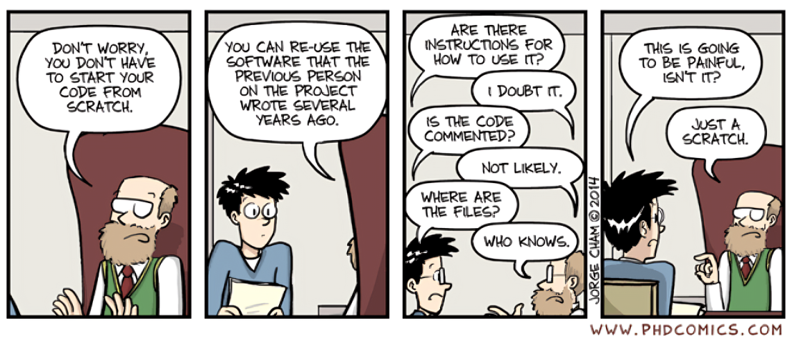

eat(dressed(shower(brush(wakeup(you)))))1 Course goal
1.1 Why Bother with This Course in the Age of AI?
Alright, let’s cut to the chase. You signed up to study Ecology and Evolutionary Biology, not Computer Science. You probably envision yourself out in the field, knee-deep in mud, observing the subtle interactions of ecosystems—not stuck behind a screen, wrestling with semicolons and syntax errors. And now, with these fancy new AI tools that seem to do everything but your taxes, you might be wondering: why bother learning this computational stuff at all? Can’t a chatbot handle it all—generate analyses, whip up some plots, and call it a day?
It’s a fair question. Technology is reshaping everything, and science is no exception. But here’s the thing: just as biologists in the past had to master the microscope, today’s biologists need a strong foundation in computing. This course isn’t about turning you into a programmer; it’s about giving you the keys to harness technology effectively—so you’re steering the ship, not just along for the ride.
And about those AI tools? Yes, they can be incredibly useful, no doubt. But relying on them blindly, without understanding the underlying principles, is like cooking from a recipe in a language you barely know. Sure, you might finish the dish, but there’s a good chance you’ll miss something critical—maybe misinterpret a step, add the wrong ingredient, or be puzzled by the end result. Computational literacy helps you to catch when the AI is leading you astray, saving you from headaches (and potentially flawed results) down the line.
I get the temptation of the “easy button”, we all do. But investing in these skills now will pay off many times over. You’ll be a more efficient, more confident researcher—and, franky, it will boost your chances of publishing in those coveted high-profile journals.
Before any anxiety sets in, let me assure you that this course isn’t a sink-or-swim experience. We’ll embark on a guided journey into computing, building your skills step by step. Think of it as learning a new language—with much simpler grammar, thankfully. We’ll use concrete example with annonated codes and hands-on exercises to support you along the way.
1.2 What You’ll Learn
We’ll cover the following topics, which are, in my view, the most essential computing skills for modern ecologists. In some sense, these are what I wish I had the chance to learn in the beginning of my grad school.
1.2.1 Fluency with R
What is our weapon of choice in this course? The R programming language. It is not the most well-polished language. It is not the fastest language. It is not the most user-friendly language. So, why R? Well, it is the lingua franca in our community. The computational tools in ecology are largely R-based. So, if you want to tap into this wealth, you’ll need a working knowledge of R.
Feeling Adventurous?
Not sold on R? You could try Julia, a newer language that’s faster, more elegant, and gaining popularity. The syntax is similar enough to R to make it a relatively easy transition, and it can even load R packages, so you can have the best of both worlds.
R has also evolved dramatically in the past decade with the rise of the tidyverse suite. When I started grad school, I absolutely hated using R. But the tidyverse transformed that experience. It introduced a coherent way of handling and visualizing data—one that feels logical and intuitive. I firmly believe it’s the right approach to data manipulation and plotting.
Heroes Behind the Tidyverse?
The tidyverse revolution is largely thanks to Hadley Wickham, whose contributions earned him the COPSS Presidents’ Award, the top honor in statistics.
But it’s not a one-person show—the tidyverse thrives because of a vibrant community united by a shared vision (link).
1.2.2 Crafting Publication-Ready Figures
With ggplot2, you’ll learn the Grammar of Graphics, one of the most powerful plotting systems out there. Beyond just producing high-quality figures, it will teach you a structured approach to data visualization.
While ggplot2 is powerful, its defaults aren’t always perfect. We’ll cover design principles that enhance both the appeal and informativeness of your figures. This skill is quite useful—after all, figures often make the first impression on your readers. By the end of the course, you’ll be capable of creating figures like this: By the end of the course, you’ll be capable of creating figures like this:

1.2.3 The Art of Data Wrangling
In our daily research, data is rarely neat. Before you can start analyzing, you’ll likely spend hours organizing it into a usable format. Fortunately, dplyr and tidyr simplify this process, turning data wrangling into a clear, logical workflow.
To get a quick taste, let us imagine describing your morning routine. In base R, it might look like a convoluted nest of functions:
Or, a series of perplexing intermediate variables:
you_w <- wakeup(you)
you_bw <- brush(you_w)
you_sbw <- shower(you_bw)
...With dplyr, however, it transforms into a straightforward, logical flow:
you |>
wakeup() |>
brush() |>
shower() |>
get_dressed() |>
eat() In the tidyverse ecosystem, each step of data manipulation is transparent, easy to follow, and, crucially, easy to debug. We’ll introduce you to a core set of verbs—fewer than ten—that will handle over 90% of everyday tasks. You see, coding languages are indeed simpler than human languages!
1.2.4 Scientific typsetting
But when it comes to updating figures, managing references, or maintaining consistent layouts, it can quickly turn into a labyrinthine headache. The core issue is that Word is a WYSIWYG editor—What You See Is What You Get (a weird acronym, I know).
The problem with WYSIWYG editors is that they often require manual tweaks—nudging an image here, adjusting a margin there—which not only consumes valuable time but also opens the door to errors. This is why separating content from layout is a strategy worth adopting. Instead of wrestling with formatting, you focus on the substance of your work—the data, the analysis, the insights—and let the tools handle the presentation.
While there are several tools for this purpose (including the notorious LaTeX), we’ll focus on Quarto, a modern document preparation system tailored for researchers. Quarto allows you to seamlessly integrate code, references, and figures, producing professional outputs in submission-ready formats like Word or LaTeX with minimal effort. By the end of this course, you’ll be able to generate documents like this with a single click in R:

While Quarto is powerful, sometimes you need specialized tools for optimal layout. LaTeX is one option, but it can feel outdated and cumbersome. We’ll briefly explore Typst, a modern alternative that offers the sophistication of LaTeX without the steep learning curve. It provides a user-friendly way to create beautiful, publication-ready documents, which I believe will replace LaTeX in the near future.
1.2.5 Reproducible Research
As a data editor for a journal, I’m often struck by how many papers are challenging to reproduce—which I see as a huge problem for science. In this course, you’ll learn to make your research fully reproducible, which benefits not only the scientific community but also you—it makes it easier to revisit and build upon your work.

We’ll get into version control using Git and GitHub, tools that help you track changes, back up your work, and collaborate effectively. Additionally, we’ll cover specific techniques in R that support reproducible workflows, ensuring your research stands on a solid foundation.
1.3 Plan (Tentative)
- Introduction to R and RStudio
- Basic data types:
tibbleandvector - Introduction to
ggplot2 - Data wrangling with
dplyr - Principles of data visualization
- Color theory
- Effective caption
- Practicle tools in ggplot ecosystem
- Annotation with
ggrepelandgghighlight - Labeling with
ggtext - Multi-panel plots with
patchwork - Interactive plots with
ggiraph - Animated plots with
gganimate - Too many points in scatter plot with
ggpointdensityandggdensity - Handing overlapping points with
- Annotation with
- Introduction to Functional Programming with
purrr- Parallel processing with
furrr
- Parallel processing with
- Introduction to
Quarto- Blocks and chunk options
- Reference management with
bibtex
- Introduction to
Typst
1.4 What We Won’t Cover
There is so much to learn with computing. There is a reason why programmers are paid so well.
- Machine Learning: This is a vast field that deserves its own course. We’ll touch on the basics, but we won’t dive deep.
- Web Development: This is a whole different beast. We won’t cover it.